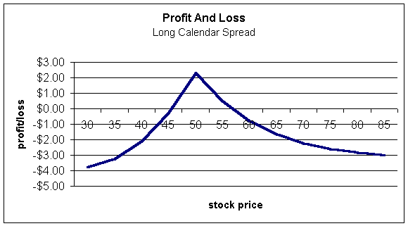
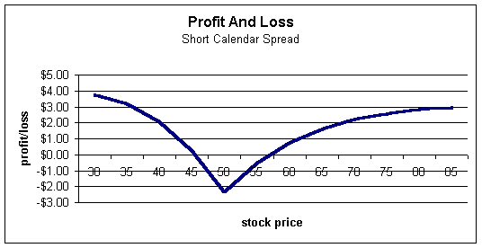

A calendar spread is any spread where the trader buys a particular month, and then sells the same strike of a different month. For example, a trader may buy a March $50 strike and sell a January $50. Notice that the trader is spreading months, hence the name calendar spread. Also, because months represent time, these are equally known as time spreads or horizontal spreads.
If the trade results in a net debit, the trader is said to be long the calendar spread; if it results in a net credit, then he is short the spread.
With a calendar spread, the trader is expecting the stock to sit flat -- this trade is actually a play on time-decay and volatility as opposed to direction.
Many traders have trouble understanding why you want the stock to sit still, so let's go through the reasoning. Say a trader buys the above trade -- long March $50 for $10 and short Jan $7 for a net debit of $3. Because the trader is long the spread, he will want the spread to widen so that he may close it for a profit.
Now, if the stock sits still, as we approach January expiration, what will happen to the spread? Both options will lose money as time goes by, but the short January option will lose far more than the long March option. The January will be nearly worthless, while the March will still have significant time remaining. For instance, the January option may be trading for $1/2 while the March, with over two months remaining, may be worth $7. The trader paid $3 and can close it for a net credit of $6-1/2 for a $3- 1/2 gain.
Let's say the stock nosedives and is trading for $20. Now, both options will be virtually nothing. You may see the January for $1/16 and the March for $1/8, but the point is: the trader will close out the spread for next to nothing for a loss of about $3. If the stock collapses, the spread will also collapse toward zero.
What if the stock rallies and is trading way up? If the options are very deep-in-the-money, regardless of the time remaining, they will converge on intrinsic value. You will see a small difference in the March $50 calls just to reflect an additional two months cost-of-carry, but the difference will be negligible.
We may see the Jan $50 trading for $30-1/2 and the Mar $50 for $31 but, again, the spread has narrowed to 1/2 point so the trader will incur a $2-1/2 loss.
From a profit and loss standpoint, the long calendar spread looks like this:
It should be evident that a long calendar spread wants the stock to sit still. Conversely, a short calendar spread will want the stock to move, either up or down by a large amount as shown by the profit and loss diagram below:
Many traders make the big mistake of entering into a calendar spread when bullish on the stock. If they are lucky enough to get the direction correct, they are greatly disappointed to see the spread collapse.
If you are bullish or bearish on a particular stock and entering into a calendar spread, you want to be short the spread -- you want the spread to narrow. In other words, if you short the spread, you will receive a credit. If the stock moves way up or way down, the spread will narrow and you can purchase it back for a profit.
If you are expecting the stock to sit still, you want to be long the spread. You will spend money to do so but the spread will widen if you are correct and the stock is relatively quiet.
Calendar spreads add a whole new dimension for most traders; that is, a limited risk way to profit from a stock doing nothing. Granted, short calls, short puts and covered calls can make money from a neutral outlook on the stock as well. However, their risk with an adverse move in the underlying is often too big for many investors. Calendar spreads can be a great way to profit from a neutral outlook while greatly limiting your risk.